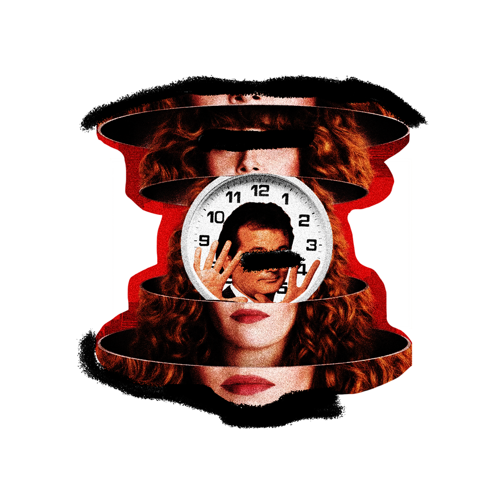
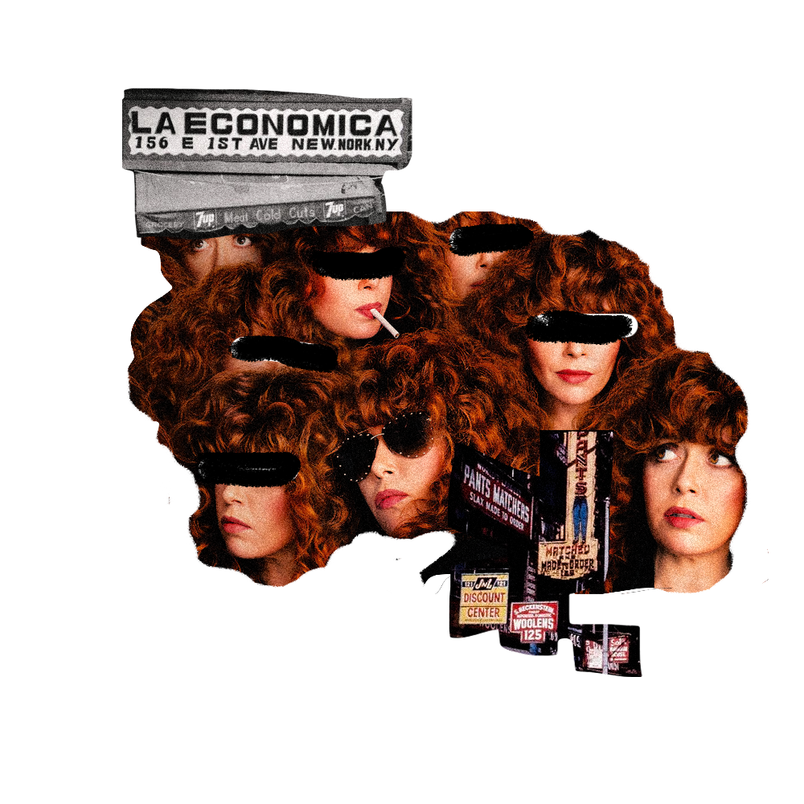

Et cetera
What’s your go-to breakfast order?
Do you welcome comparisons of “Russian Doll” to “Groundhog Day”? 
What’s the best thing about showbiz?
What do you like about the East Village?
How did your near-death experiences feed the ideas in the show?
What is the premise of your show? 

 What’s the best thing about showbiz?
What’s the best thing about showbiz?
 How did your near-death experiences feed the ideas in the show?
How did your near-death experiences feed the ideas in the show?